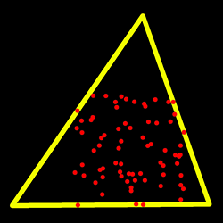

Structural Analysis and Shape Descriptors
Overview
// enums enum cv::ConnectedComponentsAlgorithmsTypes; enum cv::ConnectedComponentsTypes; enum cv::ContourApproximationModes; enum cv::RectanglesIntersectTypes; enum cv::RetrievalModes; enum cv::ShapeMatchModes; // classes class cv::Moments; // global functions void cv::approxPolyDP( InputArray curve, OutputArray approxCurve, double epsilon, bool closed ); double cv::arcLength( InputArray curve, bool closed ); Rect cv::boundingRect(InputArray points); void cv::boxPoints( RotatedRect box, OutputArray points ); int cv::connectedComponents( InputArray image, OutputArray labels, int connectivity, int ltype, int ccltype ); int cv::connectedComponents( InputArray image, OutputArray labels, int connectivity = 8, int ltype = CV_32S ); int cv::connectedComponentsWithStats( InputArray image, OutputArray labels, OutputArray stats, OutputArray centroids, int connectivity, int ltype, int ccltype ); int cv::connectedComponentsWithStats( InputArray image, OutputArray labels, OutputArray stats, OutputArray centroids, int connectivity = 8, int ltype = CV_32S ); double cv::contourArea( InputArray contour, bool oriented = false ); void cv::convexHull( InputArray points, OutputArray hull, bool clockwise = false, bool returnPoints = true ); void cv::convexityDefects( InputArray contour, InputArray convexhull, OutputArray convexityDefects ); void cv::findContours( InputOutputArray image, OutputArrayOfArrays contours, OutputArray hierarchy, int mode, int method, Point offset = Point() ); void cv::findContours( InputOutputArray image, OutputArrayOfArrays contours, int mode, int method, Point offset = Point() ); RotatedRect cv::fitEllipse(InputArray points); void cv::fitLine( InputArray points, OutputArray line, int distType, double param, double reps, double aeps ); void cv::HuMoments( const Moments& moments, double hu [7] ); void cv::HuMoments( const Moments& m, OutputArray hu ); float cv::intersectConvexConvex( InputArray _p1, InputArray _p2, OutputArray _p12, bool handleNested = true ); bool cv::isContourConvex(InputArray contour); double cv::matchShapes( InputArray contour1, InputArray contour2, int method, double parameter ); RotatedRect cv::minAreaRect(InputArray points); void cv::minEnclosingCircle( InputArray points, Point2f& center, float& radius ); double cv::minEnclosingTriangle( InputArray points, OutputArray triangle ); Moments cv::moments( InputArray array, bool binaryImage = false ); double cv::pointPolygonTest( InputArray contour, Point2f pt, bool measureDist ); int cv::rotatedRectangleIntersection( const RotatedRect& rect1, const RotatedRect& rect2, OutputArray intersectingRegion );
Detailed Documentation
Global Functions
void cv::approxPolyDP( InputArray curve, OutputArray approxCurve, double epsilon, bool closed )
Approximates a polygonal curve(s) with the specified precision.
The function cv::approxPolyDP approximates a curve or a polygon with another curve/polygon with less vertices so that the distance between them is less or equal to the specified precision. It uses the Douglas-Peucker algorithm http://en.wikipedia.org/wiki/Ramer-Douglas-Peucker_algorithm
Parameters:
| curve | Input vector of a 2D point stored in std::vector or Mat |
| approxCurve | Result of the approximation. The type should match the type of the input curve. |
| epsilon | Parameter specifying the approximation accuracy. This is the maximum distance between the original curve and its approximation. |
| closed | If true, the approximated curve is closed (its first and last vertices are connected). Otherwise, it is not closed. |
double cv::arcLength( InputArray curve, bool closed )
Calculates a contour perimeter or a curve length.
The function computes a curve length or a closed contour perimeter.
Parameters:
| curve | Input vector of 2D points, stored in std::vector or Mat. |
| closed | Flag indicating whether the curve is closed or not. |
Rect cv::boundingRect(InputArray points)
Calculates the up-right bounding rectangle of a point set.
The function calculates and returns the minimal up-right bounding rectangle for the specified point set.
Parameters:
| points | Input 2D point set, stored in std::vector or Mat. |
void cv::boxPoints( RotatedRect box, OutputArray points )
Finds the four vertices of a rotated rect. Useful to draw the rotated rectangle.
The function finds the four vertices of a rotated rectangle. This function is useful to draw the rectangle. In C++, instead of using this function, you can directly use box.points() method. Please visit the tutorial on bounding rectangle for more information.
Parameters:
| box | The input rotated rectangle. It may be the output of |
| points | The output array of four vertices of rectangles. |
int cv::connectedComponents( InputArray image, OutputArray labels, int connectivity, int ltype, int ccltype )
computes the connected components labeled image of boolean image
image with 4 or 8 way connectivity - returns N, the total number of labels [0, N-1] where 0 represents the background label. ltype specifies the output label image type, an important consideration based on the total number of labels or alternatively the total number of pixels in the source image. ccltype specifies the connected components labeling algorithm to use, currently Grana (BBDT) and Wu’s (SAUF) algorithms are supported, see the cv::ConnectedComponentsAlgorithmsTypes for details. Note that SAUF algorithm forces a row major ordering of labels while BBDT does not. This function uses parallel version of both Grana and Wu’s algorithms if at least one allowed parallel framework is enabled and if the rows of the image are at least twice the number returned by getNumberOfCPUs.
Parameters:
| image | the 8-bit single-channel image to be labeled |
| labels | destination labeled image |
| connectivity | 8 or 4 for 8-way or 4-way connectivity respectively |
| ltype | output image label type. Currently CV_32S and CV_16U are supported. |
| ccltype | connected components algorithm type (see the cv::ConnectedComponentsAlgorithmsTypes). |
int cv::connectedComponents( InputArray image, OutputArray labels, int connectivity = 8, int ltype = CV_32S )
This is an overloaded member function, provided for convenience. It differs from the above function only in what argument(s) it accepts.
Parameters:
| image | the 8-bit single-channel image to be labeled |
| labels | destination labeled image |
| connectivity | 8 or 4 for 8-way or 4-way connectivity respectively |
| ltype | output image label type. Currently CV_32S and CV_16U are supported. |
int cv::connectedComponentsWithStats( InputArray image, OutputArray labels, OutputArray stats, OutputArray centroids, int connectivity, int ltype, int ccltype )
computes the connected components labeled image of boolean image and also produces a statistics output for each label
image with 4 or 8 way connectivity - returns N, the total number of labels [0, N-1] where 0 represents the background label. ltype specifies the output label image type, an important consideration based on the total number of labels or alternatively the total number of pixels in the source image. ccltype specifies the connected components labeling algorithm to use, currently Grana’s (BBDT) and Wu’s (SAUF) algorithms are supported, see the cv::ConnectedComponentsAlgorithmsTypes for details. Note that SAUF algorithm forces a row major ordering of labels while BBDT does not. This function uses parallel version of both Grana and Wu’s algorithms (statistics included) if at least one allowed parallel framework is enabled and if the rows of the image are at least twice the number returned by getNumberOfCPUs.
Parameters:
| image | the 8-bit single-channel image to be labeled |
| labels | destination labeled image |
| stats | statistics output for each label, including the background label, see below for available statistics. Statistics are accessed via stats(label, COLUMN) where COLUMN is one of cv::ConnectedComponentsTypes. The data type is CV_32S. |
| centroids | centroid output for each label, including the background label. Centroids are accessed via centroids(label, 0) for x and centroids(label, 1) for y. The data type CV_64F. |
| connectivity | 8 or 4 for 8-way or 4-way connectivity respectively |
| ltype | output image label type. Currently CV_32S and CV_16U are supported. |
| ccltype | connected components algorithm type (see the cv::ConnectedComponentsAlgorithmsTypes). |
int cv::connectedComponentsWithStats( InputArray image, OutputArray labels, OutputArray stats, OutputArray centroids, int connectivity = 8, int ltype = CV_32S )
This is an overloaded member function, provided for convenience. It differs from the above function only in what argument(s) it accepts.
Parameters:
| image | the 8-bit single-channel image to be labeled |
| labels | destination labeled image |
| stats | statistics output for each label, including the background label, see below for available statistics. Statistics are accessed via stats(label, COLUMN) where COLUMN is one of cv::ConnectedComponentsTypes. The data type is CV_32S. |
| centroids | centroid output for each label, including the background label. Centroids are accessed via centroids(label, 0) for x and centroids(label, 1) for y. The data type CV_64F. |
| connectivity | 8 or 4 for 8-way or 4-way connectivity respectively |
| ltype | output image label type. Currently CV_32S and CV_16U are supported. |
double cv::contourArea( InputArray contour, bool oriented = false )
Calculates a contour area.
The function computes a contour area. Similarly to moments , the area is computed using the Green formula. Thus, the returned area and the number of non-zero pixels, if you draw the contour using drawContours or fillPoly , can be different. Also, the function will most certainly give a wrong results for contours with self-intersections.
Example:
vector<Point> contour; contour.push_back(Point2f(0, 0)); contour.push_back(Point2f(10, 0)); contour.push_back(Point2f(10, 10)); contour.push_back(Point2f(5, 4)); double area0 = contourArea(contour); vector<Point> approx; approxPolyDP(contour, approx, 5, true); double area1 = contourArea(approx); cout << "area0 =" << area0 << endl << "area1 =" << area1 << endl << "approx poly vertices" << approx.size() << endl;
Parameters:
| contour | Input vector of 2D points (contour vertices), stored in std::vector or Mat. |
| oriented | Oriented area flag. If it is true, the function returns a signed area value, depending on the contour orientation (clockwise or counter-clockwise). Using this feature you can determine orientation of a contour by taking the sign of an area. By default, the parameter is false, which means that the absolute value is returned. |
void cv::convexHull( InputArray points, OutputArray hull, bool clockwise = false, bool returnPoints = true )
Finds the convex hull of a point set.
The function cv::convexHull finds the convex hull of a 2D point set using the Sklansky’s algorithm [77] that has O(N logN) complexity in the current implementation. See the OpenCV sample convexhull.cpp that demonstrates the usage of different function variants.
Parameters:
| points | Input 2D point set, stored in std::vector or Mat. |
| hull | Output convex hull. It is either an integer vector of indices or vector of points. In the first case, the hull elements are 0-based indices of the convex hull points in the original array (since the set of convex hull points is a subset of the original point set). In the second case, hull elements are the convex hull points themselves. |
| clockwise | Orientation flag. If it is true, the output convex hull is oriented clockwise. Otherwise, it is oriented counter-clockwise. The assumed coordinate system has its X axis pointing to the right, and its Y axis pointing upwards. |
| returnPoints | Operation flag. In case of a matrix, when the flag is true, the function returns convex hull points. Otherwise, it returns indices of the convex hull points. When the output array is std::vector, the flag is ignored, and the output depends on the type of the vector: std::vector<int> implies returnPoints=false, std::vector<Point> implies returnPoints=true. |
void cv::convexityDefects( InputArray contour, InputArray convexhull, OutputArray convexityDefects )
Finds the convexity defects of a contour.
The figure below displays convexity defects of a hand contour:

Parameters:
| contour | Input contour. |
| convexhull | Convex hull obtained using convexHull that should contain indices of the contour points that make the hull. |
| convexityDefects | The output vector of convexity defects. In C++ and the new Python/Java interface each convexity defect is represented as 4-element integer vector (a.k.a. cv::Vec4i): (start_index, end_index, farthest_pt_index, fixpt_depth), where indices are 0-based indices in the original contour of the convexity defect beginning, end and the farthest point, and fixpt_depth is fixed-point approximation (with 8 fractional bits) of the distance between the farthest contour point and the hull. That is, to get the floating-point value of the depth will be fixpt_depth/256.0. |
void cv::findContours( InputOutputArray image, OutputArrayOfArrays contours, OutputArray hierarchy, int mode, int method, Point offset = Point() )
Finds contours in a binary image.
The function retrieves contours from the binary image using the algorithm [80]. The contours are a useful tool for shape analysis and object detection and recognition. See squares.cpp in the OpenCV sample directory. Since opencv 3.2 source image is not modified by this function.
Parameters:
| image | Source, an 8-bit single-channel image. Non-zero pixels are treated as 1’s. Zero pixels remain 0’s, so the image is treated as binary . You can use cv::compare, cv::inRange, cv::threshold, cv::adaptiveThreshold, cv::Canny, and others to create a binary image out of a grayscale or color one. If mode equals to cv::RETR_CCOMP or cv::RETR_FLOODFILL, the input can also be a 32-bit integer image of labels (CV_32SC1). |
| contours | Detected contours. Each contour is stored as a vector of points (e.g. std::vector<std::vector<cv::Point> >). |
| hierarchy | Optional output vector (e.g. std::vector<cv::Vec4i>), containing information about the image topology. It has as many elements as the number of contours. For each i-th contour contours[i], the elements hierarchy[i][0] , hierarchy[i][1] , hierarchy[i][2] , and hierarchy[i][3] are set to 0-based indices in contours of the next and previous contours at the same hierarchical level, the first child contour and the parent contour, respectively. If for the contour i there are no next, previous, parent, or nested contours, the corresponding elements of hierarchy[i] will be negative. |
| mode | Contour retrieval mode, see cv::RetrievalModes |
| method | Contour approximation method, see cv::ContourApproximationModes |
| offset | Optional offset by which every contour point is shifted. This is useful if the contours are extracted from the image ROI and then they should be analyzed in the whole image context. |
void cv::findContours( InputOutputArray image, OutputArrayOfArrays contours, int mode, int method, Point offset = Point() )
This is an overloaded member function, provided for convenience. It differs from the above function only in what argument(s) it accepts.
RotatedRect cv::fitEllipse(InputArray points)
Fits an ellipse around a set of 2D points.
The function calculates the ellipse that fits (in a least-squares sense) a set of 2D points best of all. It returns the rotated rectangle in which the ellipse is inscribed. The first algorithm described by [27] is used. Developer should keep in mind that it is possible that the returned ellipse/rotatedRect data contains negative indices, due to the data points being close to the border of the containing Mat element.
Parameters:
| points | Input 2D point set, stored in std::vector<> or Mat |
void cv::fitLine( InputArray points, OutputArray line, int distType, double param, double reps, double aeps )
Fits a line to a 2D or 3D point set.
The function fitLine fits a line to a 2D or 3D point set by minimizing \(\sum_i \rho(r_i)\) where \(r_i\) is a distance between the \(i^{th}\) point, the line and \(\rho(r)\) is a distance function, one of the following:
DIST_L2
\[\rho (r) = r^2/2 \quad \text{(the simplest and the fastest least-squares method)}\]DIST_L1
\[\rho (r) = r\]DIST_L12
\[\rho (r) = 2 \cdot ( \sqrt{1 + \frac{r^2}{2}} - 1)\]DIST_FAIR
\[\rho \left (r \right ) = C^2 \cdot \left ( \frac{r}{C} - \log{\left(1 + \frac{r}{C}\right)} \right ) \quad \text{where} \quad C=1.3998\]DIST_WELSCH
\[\rho \left (r \right ) = \frac{C^2}{2} \cdot \left ( 1 - \exp{\left(-\left(\frac{r}{C}\right)^2\right)} \right ) \quad \text{where} \quad C=2.9846\]DIST_HUBER
\[\rho (r) = \fork{r^2/2}{if \(r < C\)}{C \cdot (r-C/2)}{otherwise} \quad \text{where} \quad C=1.345\]
The algorithm is based on the M-estimator (http://en.wikipedia.org/wiki/M-estimator) technique that iteratively fits the line using the weighted least-squares algorithm. After each iteration the weights \(w_i\) are adjusted to be inversely proportional to \(\rho(r_i)\).
Parameters:
| points | Input vector of 2D or 3D points, stored in std::vector<> or Mat. |
| line | Output line parameters. In case of 2D fitting, it should be a vector of 4 elements (like Vec4f) - (vx, vy, x0, y0), where (vx, vy) is a normalized vector collinear to the line and (x0, y0) is a point on the line. In case of 3D fitting, it should be a vector of 6 elements (like Vec6f) - (vx, vy, vz, x0, y0, z0), where (vx, vy, vz) is a normalized vector collinear to the line and (x0, y0, z0) is a point on the line. |
| distType | Distance used by the M-estimator, see cv::DistanceTypes |
| param | Numerical parameter ( C ) for some types of distances. If it is 0, an optimal value is chosen. |
| reps | Sufficient accuracy for the radius (distance between the coordinate origin and the line). |
| aeps | Sufficient accuracy for the angle. 0.01 would be a good default value for reps and aeps. |
void cv::HuMoments( const Moments& moments, double hu [7] )
Calculates seven Hu invariants.
The function calculates seven Hu invariants (introduced in [40]; see also http://en.wikipedia.org/wiki/Image_moment) defined as:
where \(\eta_{ji}\) stands for \(\texttt{Moments::nu}_{ji}\).
These values are proved to be invariants to the image scale, rotation, and reflection except the seventh one, whose sign is changed by reflection. This invariance is proved with the assumption of infinite image resolution. In case of raster images, the computed Hu invariants for the original and transformed images are a bit different.
Parameters:
| moments | Input moments computed with moments . |
| hu | Output Hu invariants. |
See also:
void cv::HuMoments( const Moments& m, OutputArray hu )
This is an overloaded member function, provided for convenience. It differs from the above function only in what argument(s) it accepts.
float cv::intersectConvexConvex( InputArray _p1, InputArray _p2, OutputArray _p12, bool handleNested = true )
finds intersection of two convex polygons
bool cv::isContourConvex(InputArray contour)
Tests a contour convexity.
The function tests whether the input contour is convex or not. The contour must be simple, that is, without self-intersections. Otherwise, the function output is undefined.
Parameters:
| contour | Input vector of 2D points, stored in std::vector<> or Mat |
double cv::matchShapes( InputArray contour1, InputArray contour2, int method, double parameter )
Compares two shapes.
The function compares two shapes. All three implemented methods use the Hu invariants (see cv::HuMoments)
Parameters:
| contour1 | First contour or grayscale image. |
| contour2 | Second contour or grayscale image. |
| method | Comparison method, see cv::ShapeMatchModes |
| parameter | Method-specific parameter (not supported now). |
RotatedRect cv::minAreaRect(InputArray points)
Finds a rotated rectangle of the minimum area enclosing the input 2D point set.
The function calculates and returns the minimum-area bounding rectangle (possibly rotated) for a specified point set. See the OpenCV sample minarea.cpp . Developer should keep in mind that the returned rotatedRect can contain negative indices when data is close to the containing Mat element boundary.
Parameters:
| points | Input vector of 2D points, stored in std::vector<> or Mat |
void cv::minEnclosingCircle( InputArray points, Point2f& center, float& radius )
Finds a circle of the minimum area enclosing a 2D point set.
The function finds the minimal enclosing circle of a 2D point set using an iterative algorithm. See the OpenCV sample minarea.cpp .
Parameters:
| points | Input vector of 2D points, stored in std::vector<> or Mat |
| center | Output center of the circle. |
| radius | Output radius of the circle. |
double cv::minEnclosingTriangle( InputArray points, OutputArray triangle )
Finds a triangle of minimum area enclosing a 2D point set and returns its area.
The function finds a triangle of minimum area enclosing the given set of 2D points and returns its area. The output for a given 2D point set is shown in the image below. 2D points are depicted in red* and the enclosing triangle in yellow.
The implementation of the algorithm is based on O’Rourke’s [64] and Klee and Laskowski’s [43] papers. O’Rourke provides a \(\theta(n)\) algorithm for finding the minimal enclosing triangle of a 2D convex polygon with n vertices. Since the minEnclosingTriangle function takes a 2D point set as input an additional preprocessing step of computing the convex hull of the 2D point set is required. The complexity of the convexHull function is \(O(n log(n))\) which is higher than \(\theta(n)\). Thus the overall complexity of the function is \(O(n log(n))\).
Parameters:
| points | Input vector of 2D points with depth CV_32S or CV_32F, stored in std::vector<> or Mat |
| triangle | Output vector of three 2D points defining the vertices of the triangle. The depth of the OutputArray must be CV_32F. |
Moments cv::moments( InputArray array, bool binaryImage = false )
Calculates all of the moments up to the third order of a polygon or rasterized shape.
The function computes moments, up to the 3rd order, of a vector shape or a rasterized shape. The results are returned in the structure cv::Moments.
Only applicable to contour moments calculations from Python bindings: Note that the numpy type for the input array should be either np.int32 or np.float32.
Parameters:
| array | Raster image (single-channel, 8-bit or floating-point 2D array) or an array (\(1 \times N\) or \(N \times 1\)) of 2D points (Point or Point2f ). |
| binaryImage | If it is true, all non-zero image pixels are treated as 1’s. The parameter is used for images only. |
Returns:
moments.
See also:
double cv::pointPolygonTest( InputArray contour, Point2f pt, bool measureDist )
Performs a point-in-contour test.
The function determines whether the point is inside a contour, outside, or lies on an edge (or coincides with a vertex). It returns positive (inside), negative (outside), or zero (on an edge) value, correspondingly. When measureDist=false , the return value is +1, -1, and 0, respectively. Otherwise, the return value is a signed distance between the point and the nearest contour edge.
See below a sample output of the function where each image pixel is tested against the contour:

Parameters:
| contour | Input contour. |
| pt | Point tested against the contour. |
| measureDist | If true, the function estimates the signed distance from the point to the nearest contour edge. Otherwise, the function only checks if the point is inside a contour or not. |
int cv::rotatedRectangleIntersection( const RotatedRect& rect1, const RotatedRect& rect2, OutputArray intersectingRegion )
Finds out if there is any intersection between two rotated rectangles.
If there is then the vertices of the intersecting region are returned as well.
Below are some examples of intersection configurations. The hatched pattern indicates the intersecting region and the red vertices are returned by the function.

Parameters:
| rect1 | First rectangle |
| rect2 | Second rectangle |
| intersectingRegion | The output array of the verticies of the intersecting region. It returns at most 8 vertices. Stored as std::vector<cv::Point2f> or cv::Mat as Mx1 of type CV_32FC2. |
Returns:
One of cv::RectanglesIntersectTypes